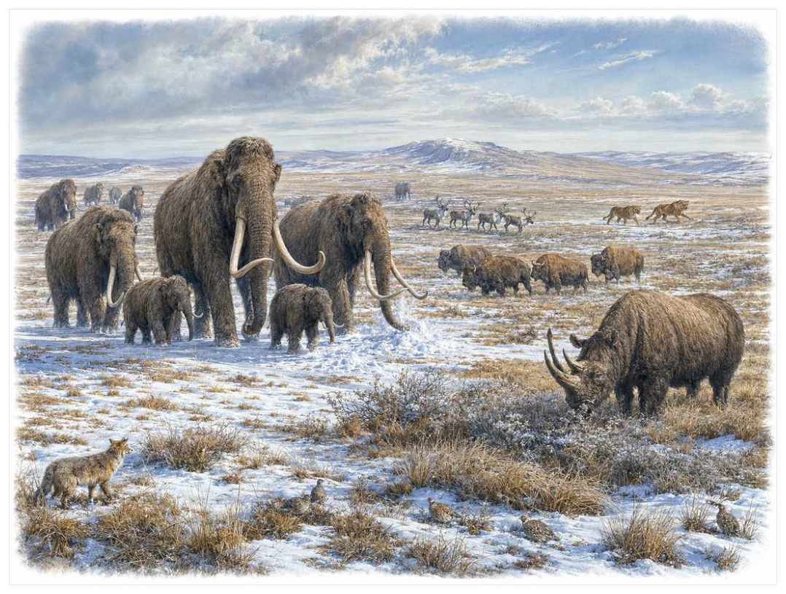

第18篇 · 更新世：冰河时代巨兽 · 第 58 章
更新世巨兽与岛屿实验：冰期世界为何如此不同
本篇主题:更新世：冰河时代巨兽
反复冰期、大陆迁徙与人类扩散共同塑造巨兽世界。

本章科学复原配图 （用于呈现结构与生态关系, 不替代化石照片、测量数据与系统发育证据。）
这一章进入约258万年前至11700年前，并延伸到全新世岛屿灭绝。没有任何生物预知下一时代，所有性状都只能在当时的资源、天敌和繁殖条件下接受筛选。更新世冰期循环反复扩张冰盖、草原、苔原和干旱带，海平面下降又建立大陆桥。欧亚有猛犸象、披毛犀、洞狮与洞熊；北美有乳齿象、刃齿虎、恐狼和短面熊；南美有巨型地懒、雕齿兽、后弓兽和箭齿兽；澳大利亚有双门齿兽、袋狮和巨型短面袋鼠。岛屿则因资源、捕食者和面积限制产生巨型鸟、侏儒象与失去飞行的物种。
进入这个时代
生态系统的真实声音不是巨兽咆哮，而是持续的摄食、分解、搬运和繁殖。每一具尸体、每一层落叶和每一次沉积扰动都会重新分配资源。冰期草原上，猛犸象推倒灌木、踩踏积雪并搬运营养，既是植食者也是生态工程师；南美巨型地懒在林缘取食，澳洲双门齿兽穿过稀疏林地。岛上缺少大型捕食者时，鸟可失去飞行并长到巨大；大型哺乳动物则因有限资源缩小。
在“更新世巨兽与岛屿实验：冰期世界为何如此不同”所覆盖的时间里，不能把地理与气候当作固定背景。海陆位置、海平面、河流或植被结构会改变资源可达性，同一性状在不同地区可能得到完全相反的选择结果。
以更新世巨兽与岛屿实验：冰期世界为何如此不同为例，物种数量并不等于生态功能。一个群落即使仍有许多物种，只要初级生产、授粉、礁体建造或大型植食等关键功能消失，食物网也会表现为深度崩溃。反过来，少数机会型物种高丰度并不代表系统已经恢复。 在本章中，这一约束具体落在“气候振荡迫使物种迁移、分裂和重新接触”这条关系上。
再从约258万年前至11700年前，并延伸到全新世岛屿灭绝的时间尺度看，旧结构被重新利用是宏演化的常见路径。自然选择无法从零绘图，只能修改已有骨骼、膜、基因调控和生活史。后来承担新功能的结构，往往最初因完全不同的局部收益而扩散。 它与“耐寒毛被和脂肪”共同决定了后续变化可以沿哪些路径发生。
图 58-1 更新世不同大陆拥有各自的巨兽组合。
生态系统如何运转
理解“气候振荡迫使物种迁移、分裂和重新接触”需要区分个体事件与长期压力。偶然一次捕食只改变个体命运，持续数千代的稳定关系才可能推动牙齿、外壳、感觉器官或生活史发生方向性变化。
围绕“气候振荡迫使物种迁移、分裂和重新接触”，这种关系没有永恒赢家。收益随密度和环境改变：防御越常见，攻击专门化的价值越高；资源越稀少，维持昂贵结构的代价越大。化石记录中的扩张与衰退，常是这种动态平衡被外部事件打破的结果。对更新世巨兽与岛屿实验：冰期世界为何如此不同而言，这一后果还会与“巨型植食者通过踩踏、食草和粪便改变植被”相互放大或抵消。
“巨型植食者通过踩踏、食草和粪便改变植被”还会改变可利用空间。一个支系若能进入新的水深、植被高度或沉积层，竞争会暂时减弱；随后追随者、捕食者和寄生者又会把新空间变成新的互动网络。
围绕“巨型植食者通过踩踏、食草和粪便改变植被”，它的长期后果通常通过幼体和繁殖体现。成年个体即使能抵抗一次危机，只要巢址、配子、幼体食物或成长季节被破坏，种群仍会在数代内下降。 对更新世巨兽与岛屿实验：冰期世界为何如此不同而言，这一后果还会与“岛屿面积、资源和捕食者缺失推动巨型化、侏儒化与失飞”相互放大或抵消。
把“岛屿面积、资源和捕食者缺失推动巨型化、侏儒化与失飞”放进食物网，可以看到它不是孤立行为。它会影响种群密度、栖息地使用和尸体进入分解链的速度，并把后果传给并未直接参与互动的物种。
围绕“岛屿面积、资源和捕食者缺失推动巨型化、侏儒化与失飞”，还要考虑空间异质性。一项在浅海、河谷或林冠有效的策略，移到深水、干旱内陆或开阔地便可能失去优势。因此同一支系常出现区域性扩张，而不是全球同步取代。 对更新世巨兽与岛屿实验：冰期世界为何如此不同而言，这一后果还会与“气候振荡迫使物种迁移、分裂和重新接触”相互放大或抵消。
关键演化创新
在“更新世巨兽与岛屿实验：冰期世界为何如此不同”中，围绕“耐寒毛被和脂肪”，这一结构的历史应按性状拆开。支撑、感觉、供能和控制往往不是同时成熟，化石会显示镶嵌状态：某一部分已接近后来的形态，其他部分仍保留祖征。 它首先需要在约258万年前至11700年前，并延伸到全新世岛屿灭绝的生态条件下产生可测量收益。
就“耐寒毛被和脂肪”而言，化石能较可靠地记录硬组织形态，却很少直接保留基因调控与短时行为。因此结构出现通常可信，最初用途和选择路径则应按证据标为主流解释或合理推测。 本章把它与“巨型草食者生态工程”并列，是为了显示复杂性状往往依赖多部分协同。
在“更新世巨兽与岛屿实验：冰期世界为何如此不同”中，围绕“巨型草食者生态工程”，“巨型草食者生态工程”是本章的重要演化创新。创新并不等于某一代突然长出完整器官，它通常由旧结构的尺寸、连接、材料和表达时序逐步变化，并在每个中间阶段承担可用功能。 它首先需要在约258万年前至11700年前，并延伸到全新世岛屿灭绝的生态条件下产生可测量收益。
就“巨型草食者生态工程”而言，其宏观影响往往滞后于结构起源。一个创新可以先在小型、稀少支系中存在数百万年，直到环境变化或竞争者灭绝后才迅速扩张；“出现”和“成为主导”是两个不同事件。 本章把它与“岛屿规则与快速形态变化”并列，是为了显示复杂性状往往依赖多部分协同。
在“更新世巨兽与岛屿实验：冰期世界为何如此不同”中，围绕“岛屿规则与快速形态变化”，这一结构的历史应按性状拆开。支撑、感觉、供能和控制往往不是同时成熟，化石会显示镶嵌状态：某一部分已接近后来的形态，其他部分仍保留祖征。它首先需要在约258万年前至11700年前，并延伸到全新世岛屿灭绝的生态条件下产生可测量收益。
就“岛屿规则与快速形态变化”而言，这也提醒我们不要寻找单一关键基因。复杂性状由多个组织和调控网络协调，改变任何一环都可能产生不同结果，演化路径因此呈树状而非直线。 本章把它与“耐寒毛被和脂肪”并列，是为了显示复杂性状往往依赖多部分协同。
生命群像：把物种放回生态网络
真猛犸象（Mammuthus primigenius）
真猛犸象（Mammuthus primigenius）存在于中晚更新世至约4000年前岛屿残存。现有材料显示其大小约肩高约2.7至3.4米，生态位置接近寒冷草原大型植食与生态工程师。长毛、脂肪、小耳和弯曲长牙适应寒冷与扫雪取食让它成为理解本章主题的合适案例，但不意味着同一类群所有成员都采用相同策略。
对真猛犸象而言，相似环境可能让远亲出现相近轮廓，但内部结构会保留祖先限制。比较它与现代类比时，应只借用可检验的功能，不把现代动物的行为、社会制度或代谢水平整套复制到古生物身上。 这使“长毛、脂肪、小耳和弯曲长牙适应寒冷与扫雪取食”不能脱离其寒冷草原大型植食与生态工程师角色来理解。
现有认识建立在冻尸、古DNA和胃内容物提供罕见证据；最后岛屿种群受小种群与环境共同压力之上。古生物学的可信度不是来自一件戏剧化标本，而是来自多件标本、多个地点和不同方法得到相容结果。新发现若改变比例或分类，并非此前研究毫无价值，而是证据边界被重新画清。
由真猛犸象这个案例看，从生态尺度看，它与本章其他成员共同维持一张网络。任何“最强”排名都会遗漏资源供应、幼体死亡、疾病和气候脉冲；真正决定长期成功的是种群能否在波动中不断完成繁殖。 它在中晚更新世至约4000年前岛屿残存留下的记录，因此同时是第58章所讨论的形态史和生态史的一部分。
披毛犀（Coelodonta antiquitatis）
在中晚更新世，披毛犀（Coelodonta antiquitatis）以约约2吨以上的身体参与食物网。它不是孤立的“明星生物”，而是欧亚寒冷草原低位食草者；厚毛、肩峰和扁前角适应寒冷与拨雪决定它能利用哪些资源，也决定必须承担哪些成本。
对披毛犀而言，它既可能是捕食者、植食者或工程者，也同时是其他生物的猎物、竞争者和分解资源。一次取食只是一瞬，长期生态影响来自成千上万个体反复搬运营养、改变植被或扰动沉积物。体型越大，这种工程效应通常越明显，但恢复速度也常越慢。 这使“厚毛、肩峰和扁前角适应寒冷与拨雪”不能脱离其欧亚寒冷草原低位食草者角色来理解。
支持该解释的材料包括洞穴图、冻尸和同位素支持生态，灭绝时间与气候和人类因素共同讨论。若不同证据出现冲突，应优先报告范围而不是强行给出单值。例如体长会随参照类群变化，运动能力会随软组织假设变化，系统位置也会随新增性状重新计算。
由披毛犀这个案例看，它也展示专门化的双面性：结构在稳定环境中提高效率，却可能在气候、食物或竞争格局突变时限制转向。灭绝不是对设计的道德评分，而是性状、地理范围和偶然事件相遇后的历史结果。 它在中晚更新世留下的记录，因此同时是第58章所讨论的形态史和生态史的一部分。
大地懒（Megatherium americanum）
认识大地懒（Megatherium americanum）要先放弃静态骨架印象。它生活在更新世，约可达4吨、直立高度数米，日常任务是作为南美大型浏览与杂食可能性存在的地懒维持能量与繁殖。强后肢和尾可支撑直立取食，巨大爪用于拉枝和防御只是这一整套生活史中最容易化石化的部分。
对大地懒而言，成年体型往往主导复原，但幼体可能使用完全不同的食物和栖息地。若成长阶段跨越多个生态位，种群就同时依赖多套环境；其中任一环节中断都可能导致长期衰退。化石骨床的年龄结构因此比单具最大标本更能说明生态。这使“强后肢和尾可支撑直立取食，巨大爪用于拉枝和防御”不能脱离其南美大型浏览与杂食可能性存在的地懒角色来理解。
我们之所以能够作出上述判断，主要因为骨骼与粪化石支持植食为主，偶尔食腐或肉食的强说法证据有限。单一结构通常有多种功能解释，所以还要查看磨损、病理、肌肉附着、沉积环境和近缘比较。计算模型能排除不可能姿势，却不能自动恢复没有保存的软组织。
由大地懒这个案例看，面对仍有争议的细节，负责任的复原不是停止讲述，而是标注证据等级。形态、年代和亲缘可较确定，具体姿势、叫声、求偶和群猎则按材料降级；新标本会在这些边界内继续改写认识。 它在更新世留下的记录，因此同时是第58章所讨论的形态史和生态史的一部分。
雕齿兽（Glyptodon）
雕齿兽（Glyptodon）生活在更新世，已知体型约为约汽车大小、可达两吨。它在群落中的角色可概括为南美低位植食装甲哺乳动物。最值得观察的结构是融合甲壳与粗尾巴是犰狳近亲的巨型路线。这些结构不是为了后来时代而准备，而是在当时直接影响摄食、运动、防御或繁殖。
对雕齿兽而言，这种生活方式还会反向塑造环境。摄食改变植物或猎物结构，足迹和掘穴改变沉积，尸体和排泄物把营养集中到局部。生态位不是它进入的固定房间，而是它与其他生物共同建造并持续修改的关系网络。 这使“融合甲壳与粗尾巴是犰狳近亲的巨型路线”不能脱离其南美低位植食装甲哺乳动物角色来理解。
其复原依赖甲片和完整骨架丰富，尾部是否像近亲般具武器结构因属而异。年代和保存形态通常属于较强证据，体重、速度、颜色和社会行为则需要额外假设。书中把这些层次拆开，是为了让读者知道哪些可视为事实，哪些仍应等待更多材料。
由雕齿兽这个案例看，它不是祖先链条上必须跨过的一格。演化树中同时存在许多近缘支系，只有少数留下后代；旁支化石同样关键，因为它们显示某组性状出现的顺序和可行范围。 它在更新世留下的记录，因此同时是第58章所讨论的形态史和生态史的一部分。
双门齿兽（Diprotodon optatum）
在这一章的生命群像里，双门齿兽（Diprotodon optatum）不能只当作图鉴名称。它出现于更新世澳大利亚，体型大约约2至3吨，主要生活方式是大型植食有袋类；袋熊近亲的大体型、强壮门齿和广泛分布适应多种植被则说明身体怎样围绕这一生活方式进行组合。
对双门齿兽而言，相似环境可能让远亲出现相近轮廓，但内部结构会保留祖先限制。比较它与现代类比时，应只借用可检验的功能，不把现代动物的行为、社会制度或代谢水平整套复制到古生物身上。 这使“袋熊近亲的大体型、强壮门齿和广泛分布适应多种植被”不能脱离其大型植食有袋类角色来理解。
科学家并未直接看见它生活，依据是骨床和同位素显示生态灵活，灭绝与人类到达、干旱化和火共同相关。现代类比可以帮助提出可检验模型，却不能取代化石；越具体的短时行为，越需要痕迹、内容物或重复病理等直接线索。
由双门齿兽这个案例看，这个案例还提醒我们，亲缘和生态角色是两件事。近亲可以因资源分化而外形迥异，远亲也能因相似压力而趋同。把它放在演化树和食物网两个坐标中，才不会误写成线性进步。 它在更新世澳大利亚留下的记录，因此同时是第58章所讨论的形态史和生态史的一部分。
象鸟（Aepyornithidae）
从外形看，象鸟（Aepyornithidae）最容易被记住的是巨大蛋和强壮腿展示岛屿巨型化。它生活在马达加斯加，延续至全新世，大小约最大种体重可超400千克，承担失飞大型植食或杂食鸟这一生态功能。把年代、体型和功能放在一起，才能避免把奇特形态当成无意义装饰。
对象鸟而言，它既可能是捕食者、植食者或工程者，也同时是其他生物的猎物、竞争者和分解资源。一次取食只是一瞬，长期生态影响来自成千上万个体反复搬运营养、改变植被或扰动沉积物。体型越大，这种工程效应通常越明显，但恢复速度也常越慢。 这使“巨大蛋和强壮腿展示岛屿巨型化”不能脱离其失飞大型植食或杂食鸟角色来理解。
证据核心是年代学显示与人类长期重叠，灭绝可能涉及栖息地、蛋采集和狩猎的累积。化石记录更擅长回答“结构是什么”，较难回答“每天怎样行动”。足迹、胃内容物、咬痕或胚胎若存在，会显著缩小推测范围；若只有零散骨骼，行为叙述就必须更克制。
由象鸟这个案例看，它所代表的身体方案后来可能消失，也可能被远亲以不同材料重新发明。生命史因此既有可重复的功能解，也有不可复制的谱系路径。两者结合，才解释现代生物为何既熟悉又偶然。它在马达加斯加，延续至全新世留下的记录，因此同时是第58章所讨论的形态史和生态史的一部分。
因果链：环境、生态与性状
把“耐寒毛被和脂肪”拆成成本与收益，可以避免把演化创新写成无条件升级。它可能扩大摄食、运动或繁殖的边界，却要付出组织材料、发育协调和日常维持的代价；“巨型草食者生态工程”又会改变这笔账在不同生命阶段的分配。对真猛犸象而言，长毛、脂肪、小耳和弯曲长牙适应寒冷与扫雪取食在成年阶段或许十分醒目，但种群能否延续仍取决于幼体是否能找到食物、是否有安全的生长场所以及环境波动后是否保留繁殖者。化石往往偏爱成年硬组织，因此书写约258万年前至11700年前，并延伸到全新世岛屿灭绝时必须主动补上这些不易保存却决定长期命运的环节。
从时间顺序看，“耐寒毛被和脂肪”的最早记录不等于它立即改写生态系统。结构可能先以小幅变异出现在稀少支系中，经历很长的试验期，直到“气候振荡迫使物种迁移、分裂和重新接触”所代表的资源条件或竞争格局改变，才出现可见的辐射。反过来，一个支系在化石记录中突然繁盛，也不证明关键结构刚刚产生；保存窗口打开、地理扩散或生态位释放都能造成类似图景。因此讨论约258万年前至11700年前，并延伸到全新世岛屿灭绝的创新时，本章把“首次出现”“功能完善”“多样化”和“成为生态主导”分成四个问题，避免用一个日期替代整段历史。
在约258万年前至11700年前，并延伸到全新世岛屿灭绝，身体不是若干部件的简单相加。“耐寒毛被和脂肪”只有与“岛屿规则与快速形态变化”在供能、控制和发育上兼容，才可能稳定遗传；局部性能提高若超过呼吸、循环或支撑能力，整体反而失效。大地懒的强后肢和尾可支撑直立取食，巨大爪用于拉枝和防御因此应放进完整身体比例中解释，而不是把某一器官单独夸大。生物力学模型可以估算受力和运动范围，组织学能限制生长速度，近缘比较能提示同源关系；三者相互校验，才有可能从静态化石走向一个能够活着完成日常活动的动物或植物。
种群层面的成功还要考虑波动，而不仅是平均状态。在资源丰富年份，“巨型草食者生态工程”带来的高性能可能迅速增加个体数；在低谷年份，维持该结构的成本又会放大死亡。若披毛犀拥有较广食谱或可迁移，便可能跨过低谷；若其厚毛、肩峰和扁前角适应寒冷与拨雪高度依赖单一环境，恢复就更困难。化石群落中的丰度峰值、体型变化和地理收缩能为这种“繁荣—压力—恢复”循环提供线索，但必须与采样偏差区分。对约258万年前至11700年前，并延伸到全新世岛屿灭绝的任何稳态描述，都只是长期波动中被岩层保存的一小段。
本章的因果链最终落在繁殖上。“巨型植食者通过踩踏、食草和粪便改变植被”改变个体获得资源和避开风险的方式，“耐寒毛被和脂肪”改变身体能做什么，但只有这些差异持续影响配子、胚胎、幼体和成体留下后代的概率，演化频率才会跨世代变化。真猛犸象和披毛犀的化石常让人关注尺寸或武器，然而巢、蛋、芽孢、孢粉、幼体壳和成长线往往更接近选择真正发生的位置。理解更新世巨兽与岛屿实验：冰期世界为何如此不同，因此要把最壮观的成年结构重新接回完整生活史。
时代横截面：个体、种群与证据
证据强度也应逐句区分。冻土木乃伊、粪化石和古DNA重建生活若直接记录形态或行为痕迹，可把某些可能性排除；稳定同位素追踪食谱与迁徙若来自模型或现代类比，则通常提供范围而非唯一答案。对大地懒的强后肢和尾可支撑直立取食，巨大爪用于拉枝和防御，我们也许能高可信地描述结构，却只能以主流解释讨论功能，以合理推测讨论日常行为。把层级写出来不会削弱故事，反而让读者知道未来新发现最可能改动哪一部分。
把结构看作模块，可以解释为什么过渡类型常显得“新旧并存”。真猛犸象的长毛、脂肪、小耳和弯曲长牙适应寒冷与扫雪取食可能已经接近后来状态，而呼吸、繁殖或运动的其他部分仍保留祖征；披毛犀可能采用另一种组合达到相似功能。演化不要求所有部件同步改变，只要求每个阶段的完整个体能够生活和繁殖。正因如此，真实谱系会产生旁支、回退和多次独立试验，而不是教科书式直梯。
再把大地懒加入横截面，群落关系会从两者比较变成网络。它作为南美大型浏览与杂食可能性存在的地懒，通过强后肢和尾可支撑直立取食，巨大爪用于拉枝和防御连接资源与其他消费者；其数量变化可能同时影响真猛犸象和披毛犀，甚至改变分解链和营养循环。这样的间接效应很少能由一具骨架直接证明，却可以从物种共现、丰度、痕迹化石和环境指标中受到约束。更新世巨兽与岛屿实验：冰期世界为何如此不同的生态复原因此需要群落数据，而不只是著名标本的精细解剖。
地理同样会拆散看似整齐的时代标签。约258万年前至11700年前，并延伸到全新世岛屿灭绝并不是全球同时拥有同一种气候与群落：海盆深浅、纬度、山脉、河流和大陆隔离会让真猛犸象、披毛犀与大地懒的分布错开。一个支系可能在某地区衰退、在另一地区成为避难所；后来扩散又会造成化石记录中的“重新出现”。因此本章的代表物种用于说明机制，而不意味着它们都在同一地点同一时刻相遇。
“谁取代了谁”常把复杂过程压成单线叙事。在更新世巨兽与岛屿实验：冰期世界为何如此不同中，即使披毛犀在某层位后减少、大地懒随后增加，也可能是二者分别响应气候或栖息地，而不是直接竞争导致淘汰。需要检查时间误差、地理重叠和资源相似度；只有三者都支持，替代关系才更可信。更多时候，生态系统通过功能重新组合过渡，旧支系与新支系会长期并存。
科学家为什么这样判断
“冻土木乃伊、粪化石和古DNA重建生活”还需要与年代学绑定。只有事件先后关系可靠，才能讨论因果；若环境变化和生物响应的误差范围大量重叠，就应表述为相关或可能机制，而不是宣布已经证明。
“稳定同位素追踪食谱与迁徙”最有价值的地方，是它能排除某些流行复原。关节不允许的姿势、承重无法支持的速度、与沉积环境冲突的生活方式，都可以被证据淘汰；剩余模型仍可能不止一个。
“岛屿地层和人类遗址对齐灭绝时间”提供的是一类约束而非完整录像。它可能精确记录某一瞬间，却未必代表全年或整个物种；也可能反映长期平均，却无法指出单次行为。把不同时间尺度的证据组合，才能重建生态过程。
在“更新世巨兽与岛屿实验：冰期世界为何如此不同”这一问题上，把上述方法合在一起，研究者才能从残缺材料走向受约束的复原。任何一条证据都可能受到成岩、污染、样本量或现代类比的限制；结论越具体，越需要多条独立证据指向同一方向，并与约258万年前至11700年前，并延伸到全新世岛屿灭绝的地层背景相容。
过去的图景与今天的证据
更新世末大型动物灭绝不能用全球单一答案解释。人类到达时间与灭绝在许多大陆相关，气候也在末次冰期结束时快速重组；不同地区中，狩猎、火、栖息地变化、小种群和疾病等因素权重不同。岛屿物种往往在人类到达后迅速消失，但大陆过程更复杂。
围绕“更新世巨兽与岛屿实验：冰期世界为何如此不同”，旧复原并不总是彻底错误。它可能正确抓住亲缘或基本功能，却在姿势、比例和生态上被新标本修订。比较“过去认为”和“现在更支持”，能看见证据如何逐层替换想象。
对约258万年前至11700年前，并延伸到全新世岛屿灭绝的材料而言，这里的争论并非一方相信科学、另一方拒绝科学，而是不同材料对模型的约束力度不同。旧结论可能建立在少量标本或错误现代类比上，新技术增加性状后会改变最合理解释。修正是研究正常运行的结果。
跨尺度观察
灭绝选择性：危机不会随机删除名单。分布狭窄、食性单一、体型大、成熟慢或依赖特定栖息地的支系往往风险更高，但每次事件的杀伤机制不同，规律只能作为概率而非绝对法则。 在“更新世巨兽与岛屿实验：冰期世界为何如此不同”中，这一尺度具体连接了“气候振荡迫使物种迁移、分裂和重新接触”与“耐寒毛被和脂肪”，因而不能只从单个成年标本判断。
恢复不是复原：大灭绝后的多样性回升并不意味着旧生态返回。幸存者会以新组合接管功能，某些空缺可能数百万年无人填补，另一些由远亲迅速占据。恢复速度应分别看物种数、身体大小和食物网复杂度。 在“更新世巨兽与岛屿实验：冰期世界为何如此不同”中，这一尺度具体连接了“巨型植食者通过踩踏、食草和粪便改变植被”与“巨型草食者生态工程”，因而不能只从单个成年标本判断。
空间镶嵌：同一地质时期包含多个大陆、纬度和海盆。地区之间可因山脉、海峡和洋流形成不同群落，局部化石库不能代表全球平均。比较多个地点能区分真正的全球事件与区域替换。 在“更新世巨兽与岛屿实验：冰期世界为何如此不同”中，这一尺度具体连接了“岛屿面积、资源和捕食者缺失推动巨型化、侏儒化与失飞”与“岛屿规则与快速形态变化”，因而不能只从单个成年标本判断。
通向下一个时代
从本章走向下一阶段时，需要保留的不是一串物种名，而是一个因果链：环境改变可用能量与栖息地，生态关系筛选性状，性状又反过来改造环境。巨兽消失改变的不只是动物名单，还包括火 regime、种子传播、营养循环和植被结构。与此同时，人族在更新世多次分化、扩散和杂交，成为越来越强的生态力量。
本章精选来源
- [R101] Koch, P. L. & Barnosky, A. D. Late Quaternary extinctions: state of the debate. Annual Review of Ecology, Evolution, and Systematics 37, 215-250 (2006).
- [R102] Sandom, C. et al. Global late Quaternary megafauna extinctions linked to humans, not climate change. Proceedings of the Royal Society B 281, 20133254 (2014).
- [R103] Lorenzen, E. D. et al. Species-specific responses of Late Quaternary megafauna to climate and humans. Nature 479, 359-364 (2011).
- [R104] Palkopoulou, E. et al. A comprehensive genomic history of extinct and living elephants. Proceedings of the National Academy of Sciences 115, E2566-E2574 (2018).
- [R105] Green, R. E. et al. A draft sequence of the Neandertal genome. Science 328, 710-722 (2010).